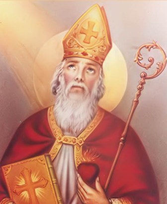

Vào 20h30, thứ Bảy, ngày 15/08/2020, tại Nhà thờ Giáo xứ Bích Trì, Cha phó Giuse Phạm Hoàng Huy đã có buổi chia sẻ và ban bí tích Hòa giải cho các bạn Giới trẻ, giúp các bạn hồi tâm, xét mình và nhận ra sự hiện diện của Chúa trong cuộc đời mình. Trong phần chia sẻ, qua dụ ngôn “Người con hoang đàng” (Lc 15, 11-32), cha Giuse đã mời gọi các bạn trẻ hãy “Trở về với Giêsu”. Từ đó giúp các bạn trẻ nhận thức hơn về sự trở về của chính mình sau bao lần bị lôi kéo bởi những đam mê trần thế mà quên lối về, quên mất Lời mời gọi của Chúa. Trở về để tu sửa, để chỉnh trang lại chính bản thân mình như lúc ban đầu lãnh nhận bí tích Rửa tội. Trở về với để được bình an. Đồng thời, cha cũng kêu gọi các bạn trẻ trong Giáo xứ hãy làm mới lại chính mình, hãy bỏ đi cái tôi ích kỉ để chuẩn bị cho ngày Lễ quan thầy được diễn ra thật sốt sáng và đem lại nhiều ý nghĩa.
Chương trình lễ Quan thầy Giới trẻ Giáo xứ Bích Trì năm 2020:



Xin Thánh Augustino quan thầy cầu bầu cùng Chúa, giúp các bạn trẻ trong Giáo xứ ngày một trưởng thành hơn trong đời sống Đức tin và trong cuộc sống thường ngày.